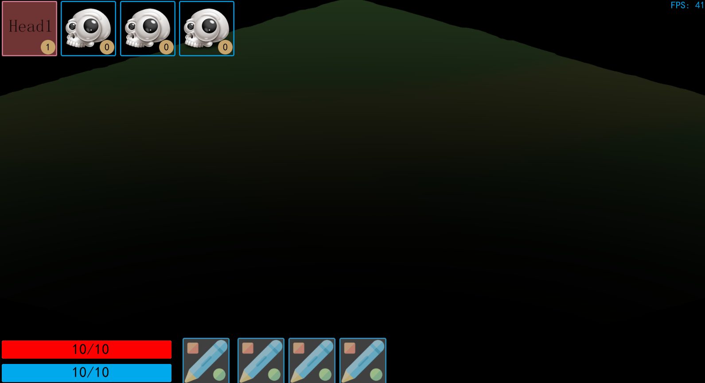
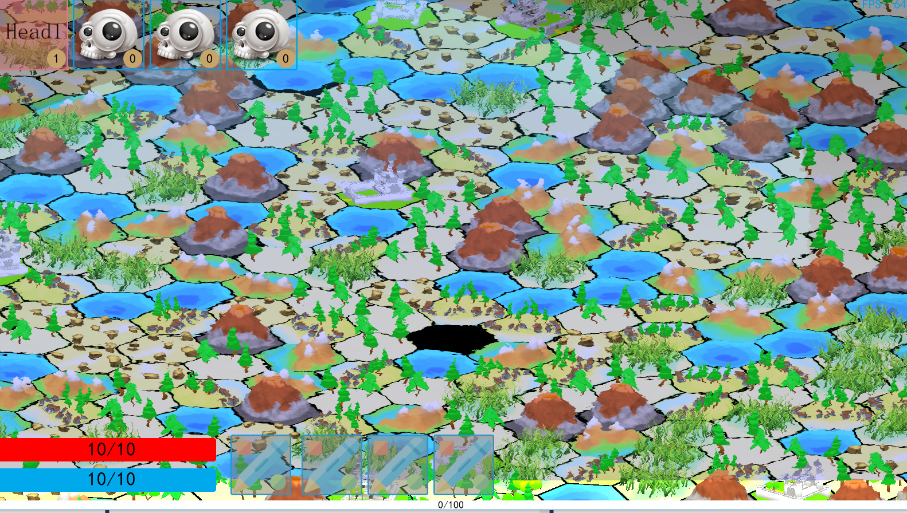

chenjie199234
i copy the code in the Water example,NO.23
but there is something strange in my object,like a white shadow~
how to fix it~
it will show when the angle between camera direction and horizontal plane is small.
this is the screen shoot




 )
)